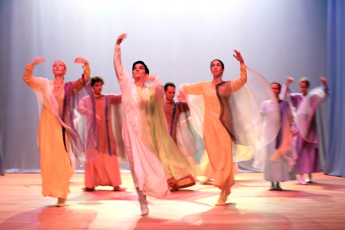
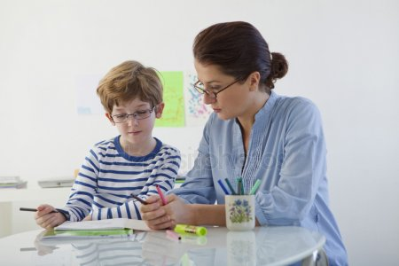
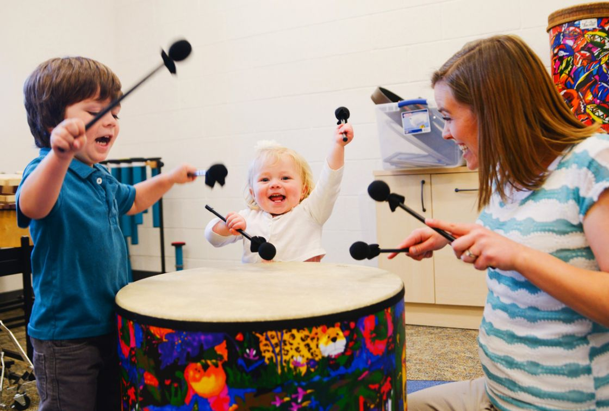
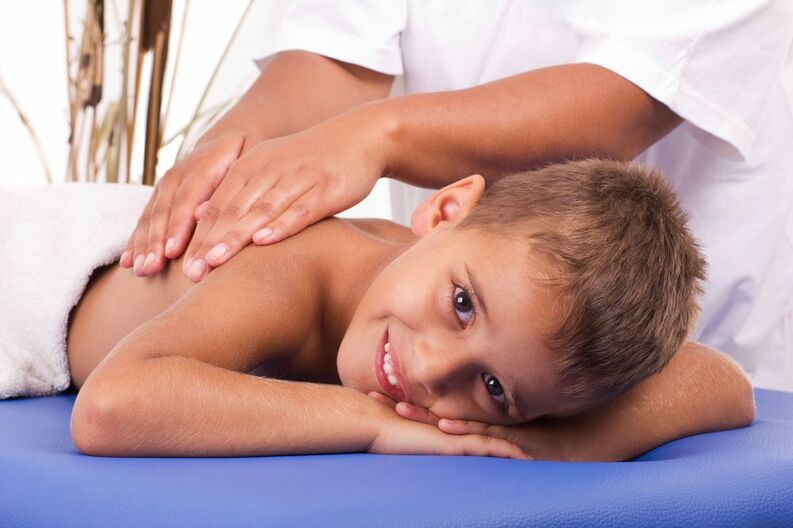
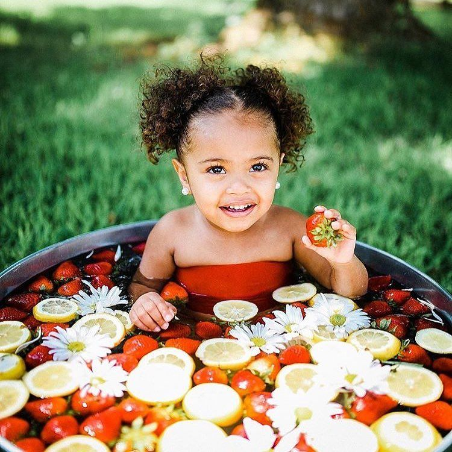
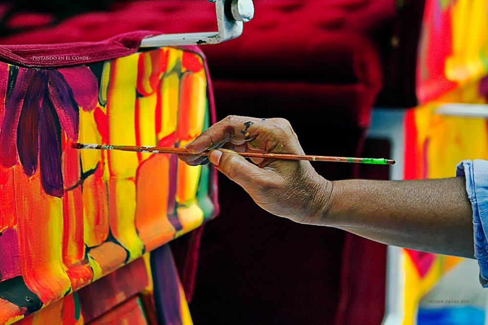

Euritma curativa
Atividades recreativas
As atividades que a Travessia desenvolve são determinadas de acordo com a idade de cada criança ou jovem.
Eles recebem o conteúdo programático adequado à idade com base no Currículo Waldorf.
Conheça nossas atividades
Musica
A Musitocoterapia é oferecida em dois formatos na Ass. Travessia: atividades com grupos e individual como atendimento terapêutico. A Musicoterapia trata-se da utilização dos elementos musicais, através do canto, diversos instrumentos musicais, sons, gestos, movimento, sendo estas as ‘ferramentas’ para a construção de algo que acontecerá como processo criativo (pedagógico e terapêutico) a fim de propiciar o desenvolvimento individual e coletivo, oferecendo possibilidades como forma de manifestar e reconhecer as habilidades e potências do ser humano.
Ceramica
Por ser um material maleável e natural, a argila permite a exploração tátil para a estruturação das formas, estimulando o desenvolvimento do aluno. Na cerâmica, o aluno trabalha o planejamento das ações escolhendo a melhor maneira de transformar seu mundo imaginário em objeto. A frustração faz parte do processo, pois nem sempre é possível concretizar uma ideia. As peças podem estourar no forno, ou rachar. Porém, é sempre possível recomeçar.
Marcenaria
É o trabalho de transformar a madeira em objeto útil ou decorativo onde tem como objetivos gerais: Trabalhar o ritmo, a paciência, a persistência e principalmente a concentração durante a execução. Objetivos específicos: Trabalhar os sentidos humanos tais como: tato, e visão, e motricidade fina e criatividade. Os alunos começam a trabalhar na marcenaria entre 10 e 11 anos até a fase adulta. Eles recebem a madeira bruta e com as ferramentas começam a dar forma, ressaltamos a importância das árvores, seu crescimento e que a partir dela podem surgir várias formas de animais, brinquedos, etc...
Padaria
Alunos do Ensino Médio e Terapia Social, selecionados através de suas habilidades, aptidões e também dificuldades através da Padaria Terapêutica, Padaria Produtiva e Culinária para aprender novas receitas e ajudar no preparo da refeição na escola. Mais do que vivenciar a prática culinária e a de pães, os jovens, por meio destas oficinas terão consciência sobre a importância de uma boa alimentação, para uma vida mais saudável, conseguindo que sejam seres que futuramente sejam responsáveis pela melhoria da sua situação de vida, e tenham condições de se profissionalizarem, se assim o desejarem e quiserem.
Tecelagem
Quem já teve a oportunidade de acompanhar todas as etapas da confecção de um tecido no tear manual pode facilmente constatar o seu potencial terapêutico. O (aparente) emaranhado de fios que irão compor o urdume ou estrutura do tecido aos poucos vão sendo ordenados, tensionados e, por meio da trama, tomando a forma do tecido imaginado no início do processo. Por meio dessa organização gradativa dos fios é que se busca a ordenação dos pensamentos e sentimentos de nossos alunos do Ensino Médio e Terapia Social . Partindo de uma ideia, os alunos percorrem todas as etapas de sua confecção: projeto, cálculos, escolha dos materiais, urdidura, trama, costuras e acabamentos que termina com um brilho no olhar e um sorriso pela realização.

Outras atividades
Taichi
Jardinagem
Dança
Teatro
Fisica
Culinaria
Trabalhos manuais
Trabalhos manuais
Papel Machê
Atividades terapeuticas
* Durante o periodo em que os alunos estão na Ass Travessia, são oferecidos, também atendimentos terapeuticos de apoio social *


Fonoaudiologia

Musico Terapia

Massagem Ritmica

Banhos Terapeuticos

Terapia artistica